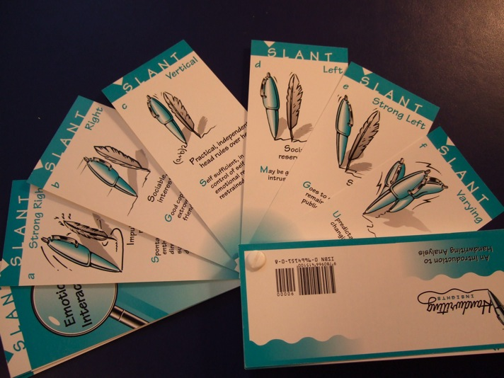
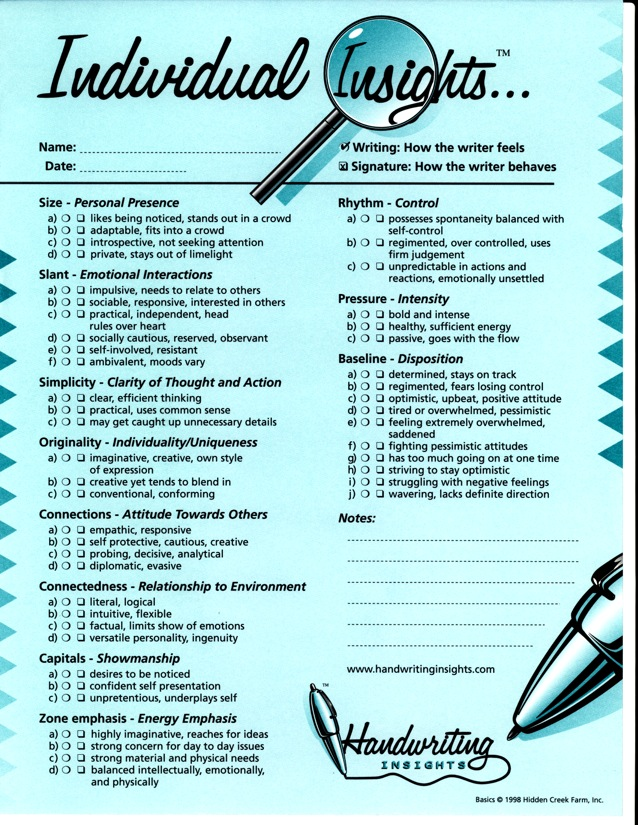

How to Use Handwriting Insights Portable Personality Test
to Create a Personality Profile
Ask
someone if they would like to know what their handwriting
reveals about their personality. After they say yes,
proceed as follows.
1. if you do not already have a writing sample, give the
person a sheet of unlined paper and a pen and ask them to
write a few sentences and then sign their name. It they
give you a blank stare, then suggest that they write
something like "Here is a sample of my handwriting. Please
tell me what my handwriting says about my personality."
followed by their signature.
2.
Take a moment to look at the writing and see how
similar the writing is to the
signature.
Remember from
Basic Concepts
that
handwriting
represents how a person feels privately (their
true
personality), and the
signature
represents the public image that the writer wants to
project. Therefore, a big difference between a person's
writing and their signature indicates a big difference
between their private and public self. When the writing and
the signature are identical, then "what you see is what you
get" and the person presents themself identical to how they
feel inside.
3.
Also, note if the writing slants to the
left.
I have found that when their is a left slant to the
writing, indicating the writer is less spontaneous and more
self-conscious, that they will be less likely to engage in
an open conversation with you about what their handwriting
reveals.
4. Pull out your Handwriting Insights Deck.
With the person's involvement,
go through each of the 11 categories (e.g. SIze, Slant,
etc.) and pull to one side the card that most closely
matches. If you are not sure, just skip the category. If
you feel that two cards match (this often happens with
Connections, for example) then pull to one side both cards.
Then explain to the person that each writing characteristic
is an aspect of their personality and that it is all of
them combined together that create the personality.
Then
turn the Handwriting Insights deck over and hand it to the
person.
(I have found that this makes people more comfortable
because they get to see it directly instead of you telling
it to them.
5. From there, they may just start talking or you can ask
them what they agree and disagree with. Listen an learn how
this person sees themself.
6. If I know the person personally (as opposed to when I
analyze the handwriting of relative strangers at parties)
it isn't unusual for me to be surprised about a couple of
the handwriting characteristics. For example, once I noted
that the writer used very large capital letters (indicating
he wanted attention) and yet I knew this fellow to be very
quiet and shy. So I said, that really surprises me that
your capitals are so large which indicate you want to be
noticed and he replied "yes - I noticed that a lot of
executives wrote that way so I decided to copy that style
thinking it might help me get ahead." That's the kind of
interesting insights you will get when you talk with people
about their handwriting.
TIPS
It
is useful for you to keep in mind
that most people are self critical, and that we live in a
world that keeps telling us we need to improve - be thinner
or more educated or richer or whatever. My goal in creating
Handwriting Insights was to give a descriptive,
nonjudgmental profile so that the person would get insight
without any hurt feelings. For example, writers with tiny
writing are described as "pays attention to detail" and not
as "picky." Often when I analyze the writing of children in
their early teans they will ask "is that bad" and I always
reply that
there are no bad cards.
So this interaction with you gives the person the
opportunity to talk about how they see themself in less of
a judgmental way.
Each personality profile an opportunity to help people
appreciate who they are, get to know them better.
If
you find the writing is significantly different from the
handwriting,
you can use a phrasing like "you present yourself as
-----------------, but inside you feel --------------." So
for example if someones' signature is large, but their
writing is very small, you could say "You present yourself
as standing out in a crowd and enjoying attention, but
inside you feel more introspective and are not seeking
attention."
My favorite part of profiling someone's personality is when
I find that I have made a wrong assumption about someone
and in getting that corrected I learn something I would
have not otherwise learned about the person. For example, I
was analyzing my friend's mother of 75 years old, a lovely,
quiet, reserved southern woman. When I got to her capitals
they were HUGE (this means that she likes attention) and I
thought - this can't be right! So instead of pulling aside
the Large card for Capitals, I pulled aside the medium
card. After looking at the cards I had selected she said
that she agreed with all of them but the medium capitals
card - she said "Oh no, that is wrong. I LOVE attention."
My lesson - just look at the writing and select the cards
and let the person tell you what they believe.
Sometimes
the handwriting sample will be written with jerkey strokes,
broken lines, uneven pressure, overall erratic.
This can be a sign of significant health problems in the
writer, and if you get a chance to look at the writer when
they are writing the sample you will see the difficulties
that they are having controlling the pen. When this
happens, since you are just an amateur handwriting analyst
doing this for fun and insight, what I suggest you do is to
simply say that the writer is not feeling energetic right
now, and focus on the writing characteristics that are not
too impacted by the difficulty of writing. I was handed a
sample like this once by a middle aged woman and for a
moment it took my breath away as it seemed to weak and
shakey and my overall impression was that she was quite ill
(it turned out that she was in the final stages of a life
threatening disease). So I focused on slant, capitals,
size, and zones and said some encouraging words about what
a people person she was. I skipped totally baseline and
rhythm. In that way I could create a personality profile
without talking about health issues.
Handwriting
Insights is a high quality deck of 64 connected,
illustrated cards that teaches you handwriting analysis as
you use it. You'll have your first analysis 15 minutes
after you open the package. After the first time, analyzing
a hand writing sample just takes 5 minutes.
Developed by a mediator and an award winning professional
graphologist, it produces an analysis that is accurate, but
is worded constructively so that there are not hurt
feelings.
We
call it "Entertainment that's Insightful."
This
is simply the easiest way to generate a basic handwriting
analysis!
Handwriting Insights explains eleven different handwriting
traits. Each trait has three to ten variations. For
example, the trait of Slant, which represents a person's
emotional interactions, has the following six variations:
strong right, right, vertical, left, strong left, and
varied. On the front of each card is an example of that
particular variation, and a description of what to look for
in the writing.

On the back of the card is both a brief and a more detailed
explanation of what that particular writing trait means.
These explanation are descriptive, not judgmental. This
means that people will get insight into what their
handwriting is saying about their personalities without
getting their feeling hurt.
Producing an analysis is a simple as going through the
deck, seeing which of the variations most matches the
writing for each of the eleven traits, and sliding the
matching card to the side. You wind up with eleven cards,
and when you turn the deck over, there is the
analysis.

If you want a record of the analysis, you simply check of
the appropriate boxes on the Individual Insights Pad that
comes with your kit.

*****
Here is a picture of the Kit - Handwriting Insights Card
Deck, Individual Insights Pad, and a box.

Handwriting Insights is handwriting analysis with the work
removed, and the fun left in.